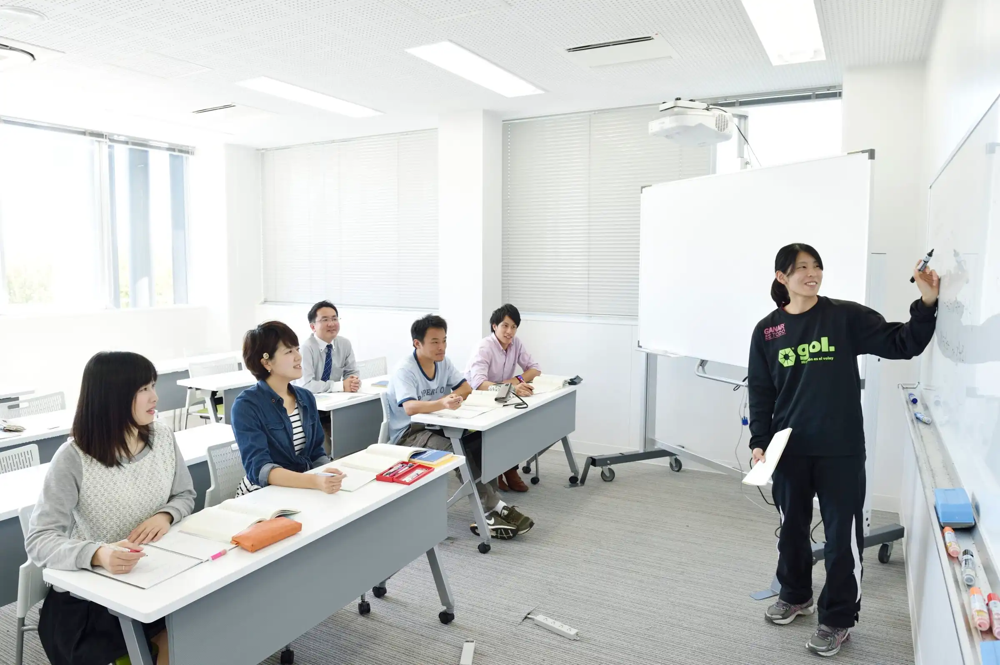
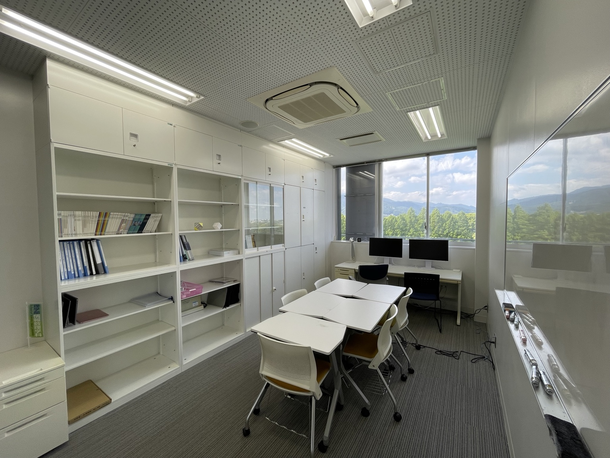
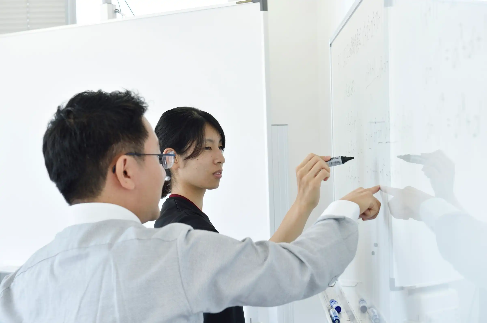

あみだくじと群論
横線を1本たどるたびに、隣り合う位置が入れ替わります。この「入れ替え」を数学の言葉で整理すると、対称群という構造が現れます。
TOKAI UNIVERSITY · MATHEMATICAL SCIENCES
「なぜ、そうなるのだろう？」という疑問から数学は始まります。代数学の考え方を身につけ、自分の言葉で説明できる喜びを、一緒に味わいませんか。
情報数理第2研究室 · 指導教員 那須弘和
01 / DISCOVER
計算の答えを求めるだけでなく、数や図形の背後にある共通のルールを探します。身近な「あみだくじ」から、目に見えない高次元の図形まで。数学の世界は思いがけないところでつながっています。
横線を1本たどるたびに、隣り合う位置が入れ替わります。この「入れ替え」を数学の言葉で整理すると、対称群という構造が現れます。
直線や円だけでなく、複雑な曲線や曲面も方程式で表せます。代数幾何学は、方程式が描き出す図形の性質を研究する分野です。
定理がなぜ正しいのか、どんな例で成り立つのか。教科書を読み、考え、議論することで、数学を理解する力を育てます。
TRY IT / 小さな数学体験
ボタンを押すと横線が増え、数字の行き先が変わります。横線1本は、隣り合う2本の線の入れ替え。これが群論への入口です。
02 / TOPICS
那須研究室は数学、とくに代数学を中心とした研究室です。指導教員の専門は代数幾何学ですが、代数学に関係する幅広いテーマを歓迎します。
方程式で定まる曲線・曲面などの図形を、代数学を用いて研究します。
整数や代数的な仕組みが、情報を安全にやり取りする技術と結びつきます。
情報の誤りを検出・訂正する仕組みを、数学的な構造から考えます。
方程式の解や対称性を手がかりに、数式の奥にある理論を探ります。
※ 上記はテーマの例です。実際に扱う教科書・内容は、関心や習熟度に応じて相談します。
03 / READING LIST
那須研究室では、代数学に関する教科書を輪講形式で読み進めます。以下は過去に実際に講読したテキストの例です。取り上げる本は、関心や習熟度に応じて相談します。
方程式で定まる曲線や図形の性質を探ります。
情報の誤りを見つけ、訂正する仕組みを数学から考えます。
代数的な構造が情報の安全を支える仕組みを学びます。
方程式の解とその背後にある法則を考えます。
04 / LIFE IN THE LAB
ゼミでは学生が教科書の内容や演習問題を説明し、互いに質問しながら理解を深めます。答えを知るだけでなく、自分で考え、小さな発見を積み重ねることを大切にしています。



05 / GRADUATION PRESENTATIONS
ゼミナール2または3では学んだ内容を整理し、卒業研究発表会で発表します。2025年度の発表会（2026年1月23日開催）で取り上げられた題目を紹介します。
※ 発表題目のみ掲載しています（発表者の氏名・学籍番号は省略）。
06 / AFTER GRADUATION
卒業生の進路は、IT・情報通信、製造業、教育、サービス業、大学院進学など多岐にわたります。論理的に考え、問題を解決し、人に説明する経験を、将来のさまざまな場面に生かしてほしいと考えています。
キヤノンITソリューションズ、インテック、システナ、中央システム など
スズキ、サンケン電気、メイテック など
公立中学校教員、高等学校教員 など
東海大学大学院、横浜国立大学大学院 など
2025 オリンパスマーケティング、神奈川トヨタ自動車、メトロ、カスミ、アイ・ティー・エックス、日本マクドナルド、教員、東海大学大学院、横浜国立大学大学院 など
2024 クリーブ、北関東綜合警備保障、アイエーグループ、積水樹脂プラメタル、アプテック、メイテック、東海大学大学院 など
2023 キヤノンITソリューションズ、JALグランドサービス、アクトインフォメーションサービス、アクティアス、東光食品工業、教員、東海大学大学院 など
2022 PCデポコーポレーション、スタッフサービス、アパホテル、教員 など
2021 いーふらん、サンケン電気、システナ、イービーエム、オークス・ソリューション、ワールドコーポレーション、VSN
2020 ライオン菓子、テクノプロ・エンジニアリング社、ウイルテック、インテック、教員
2019 NTC、ネオシステム、ISTソフトウェア、セントラルエンジニアリング、ユニシステム
2018 レジェンドアプリケーションズ、スズキ、中央システム、ヒトコミュニケーションズ、ゼネテック、ユニシステム
※ 過去の卒業生の進路例です。就職・進学を保証するものではありません。
07 / OUR APPROACH
数学の面白さは、答えを知ることだけにあるのではありません。一つの問題に対してさまざまな方法を試し、自分なりの解決方法を見つけること。その過程にこそ、数学を学ぶ楽しさがあります。
那須研究室では、小さなことでも自分の力で発見する経験を大切にしています。
学園誌『TOKAI』vol.177（2015年）の研究室紹介でも取り上げられた教育方針をもとに再構成しています。
08 / SEMINAR LIFE
代数学に関する教科書を読み、定義・定理・証明を自分で確かめます。
輪講形式で内容を発表します。わからない点を整理し、質問や議論を通じて理解を深めます。
卒論発表会で成果を発表します。発表用のTeXスライドをゼミナールレポートとして提出します。
週1回（ゼミナール1・2、情報数理諸論A・B）
曜日・時間は配属後の調整・案内によります。
Scientific English A・Bでは、(主に)大学院進学希望者を対象に英語の専門書を輪講します。
09 / MESSAGE
10 / JOIN US
ゼミ配属の選考方法は成績順です。研究内容やゼミの進め方について聞きたいことがあれば、事前にメールで面談を申し込んでください。日程を調整します。
メールで面談を申し込む ↗